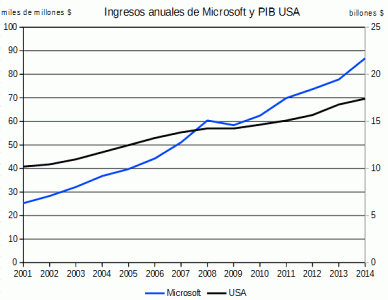

| Microsoft | |
|---|---|
|  | Microsoft ha sido probablemente la empresa de software más importante del mundo desde finales de los 80. Su principal fuente de ingresos ha sido siempre la venta del sistema operativo Windows y la suite ofimática Office. Ha realizado numerosos intentos de diversificar sus ingresos con la venta de aparatos (periféricos, reproductores, consolas, teléfonos, ordenadores), sin demasiado éxito excepto con la consola Xbox, y con la venta de servicios en la nube (Azure). |